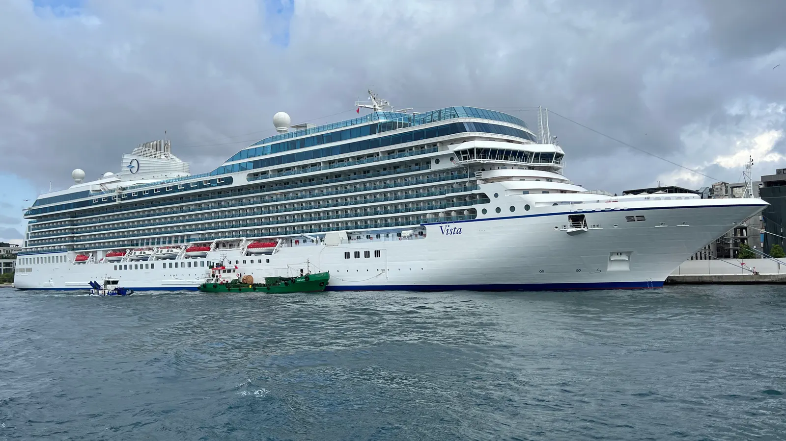

Cruise Hub
다른 선사
로얄 캐리비안
MSC 크루즈
카니발 크루즈
노르웨이지안 (NCL)
코스타
프린세스
셀러브리티
버진 보야지
홀란드 아메리카
아자마라
오세아니아
럭셔리
실버씨
리젠트 세븐시즈
크리스탈
Oceania Cruises Official Fleet
운항 선단과 신조선 제원 및 리모델링 리포트 (2026)

소나타 클래스 (Sonata Class)
Oceania Sonata
건조년도
2027 예정
톤수
86,000 GT
1인당 톤수 (GT/승객)
61.9
승무원당 승객
1.63
신조선 (2027년 8월 예정)
알루라 클래스 (Allura Class)
Oceania Allura
건조년도
2025
톤수
67,000 GT
1인당 톤수 (GT/승객)
55.8
승무원당 승객
1.50
리모델링: -
Oceania Vista
건조년도
2023
톤수
67,000 GT
1인당 톤수 (GT/승객)
55.8
승무원당 승객
1.50
리모델링: -
오세아니아 클래스 (Oceania Class)
Oceania Riviera
건조년도
2012
톤수
66,172 GT
1인당 톤수 (GT/승객)
52.9
승무원당 승객
1.56
리모델링:
2022**
Oceania Marina
건조년도
2011
톤수
66,172 GT
1인당 톤수 (GT/승객)
52.9
승무원당 승객
1.56
리모델링:
2024**
레가타 클래스 (Regatta Class / Boutique)
Oceania Sirena
건조년도
1999 (2016 인수)
톤수
30,277 GT
1인당 톤수 (GT/승객)
44.2
승무원당 승객
1.73
리모델링: 2023
2028년 봄 선단 이탈 예정
Oceania Nautica
건조년도
2000
톤수
30,277 GT
1인당 톤수 (GT/승객)
44.2
승무원당 승객
1.73
리모델링: 2022
Oceania Insignia
건조년도
1998
톤수
30,277 GT
1인당 톤수 (GT/승객)
44.2
승무원당 승객
1.73
리모델링: 2024
Oceania Regatta
건조년도
1998
톤수
30,277 GT
1인당 톤수 (GT/승객)
44.2
승무원당 승객
1.73
리모델링: 2024
2026년 8월 오세아니아 운항 종료 · My Cruises 장기 용선
.png){kind=link}